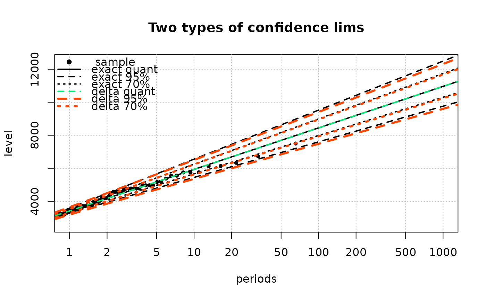

Legend management for return level plots
RLlegend.RdLegend management for return level plots produced with the plot
and lines method of the "Renouv" class.
Arguments
- x
-
A possible value for the
xargument oflegend. This will usually be a character giving the position e.g,"topleft"or"bottomleft". See thelegendfunction help. - bty
-
As in
legend. The default value"n"differs from the default value oflegend.
- ...
-
Other arguments to be kept in the list and passed later to
legend. These arguments should be chosen among those oflegendmodifying the global legend appearance (e.g.,bg) but not among those modifying the legend content (e.g.colpt.bg,legend, ...) since the content is here built semi-automatically.
Details
This function is to be used in conjunction with
plot.Renouv and lines.Renouv methods. It
allows the construction of a legend in a semi-automatic fashion, using
the value of the par argument of the plot and
lines methods to specify the legend construction.
Each call to the plot.Renouv or
lines.Renouv changes the content of a list variable
named .RLlegend in a special environment bound to the
package. This list is re-created when RLlegend.ini is called,
and is used later to draw a legend on the active device when
RLlegend.show is called. Between these two calls, the
plot and lines methods should be used with their arg
legend set to FALSE.
Note
The size of symbols (i.e, plotting characters) can be set by
using the RLpar function and the par
argument of the methods plot.Renouv and
lines.Renouv. However it can not be changed in the
legend.
See also
plot.Renouv and lines.Renouv for
and the RLpar function to change the graphical
parameters of the plot and the legend by using the par
argument.
Examples
## use Garonne data
xG <- Garonne$OTdata$Flow
## use special "exponential" distribution
fit1 <- Renouv(x = xG, threshold = 2500, distname.y = "exponential",
effDuration = 65, plot = FALSE)
#> Special inference for the exponential case without history
#> Warning: uncertainty on the rate not taken into account yet in the exponential with no history case
## use 'exp' in black box fashion, hence with delta method
fit2 <- Renouv(x = xG, , threshold = 2500, distname.y = "exp",
effDuration = 65, start.par.y = c(rate = 1), plot = FALSE)
#> Warning: warning: distribution not in target list. Still EXPERIMENTAL
RLlegend.ini() ## initialise legend
## sample points only
plot(fit1, main = "Two types of confidence lims",
show = list(OT = TRUE, quant = FALSE, conf = FALSE),
label = "",
legend = FALSE)
## quant and confidence lims
lines(fit1,
show = list(OT = FALSE, quant = TRUE, conf = TRUE),
label = "exact",
legend = FALSE)
## quant (overplot) and confidence lims
lines(fit2,
show = list(OT = FALSE, quant = TRUE, conf = TRUE),
par = RLpar(quant.lty = 2, quant.col = "SpringGreen2",
conf.conf1.col = "orangered", conf.conf1.lwd = 3,
conf.conf2.col = "orangered", conf.conf2.lwd = 3),
label = "delta",
legend = FALSE)
RLlegend.show() ## now draw legend
